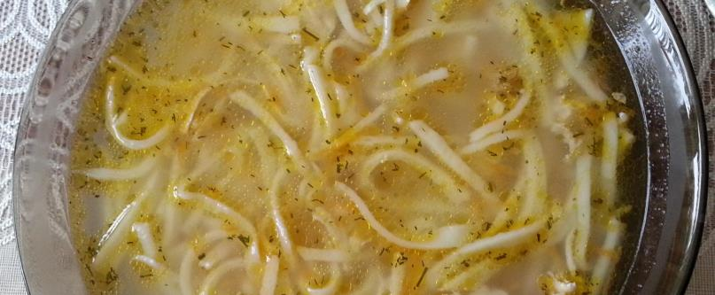

Яичная лапша на курином бульоне

- TODO
Куриный бульон (куриная грудка, луковица, морковка, кусок капусты, лавр, зелень, перец горошком и соль. варить час) процедить, курицу порезать на части, вернуть в бульон, бросить яичную лапшу, варить 4 минуты. Добавить зелень и куркуму.
 Назад к списку рецептов
Назад к списку рецептов